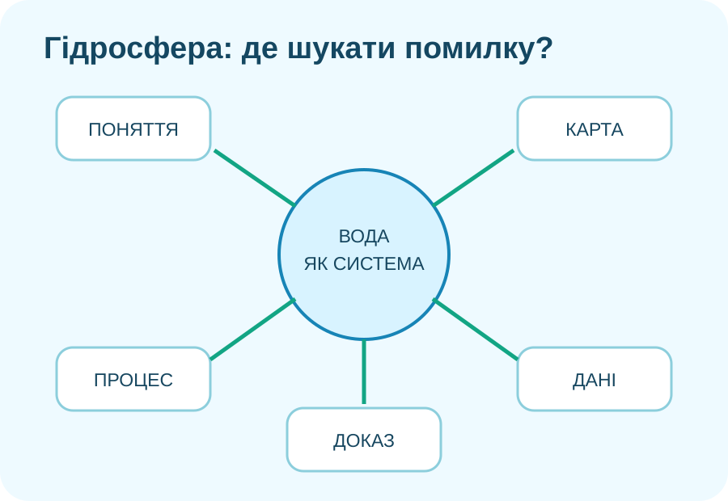
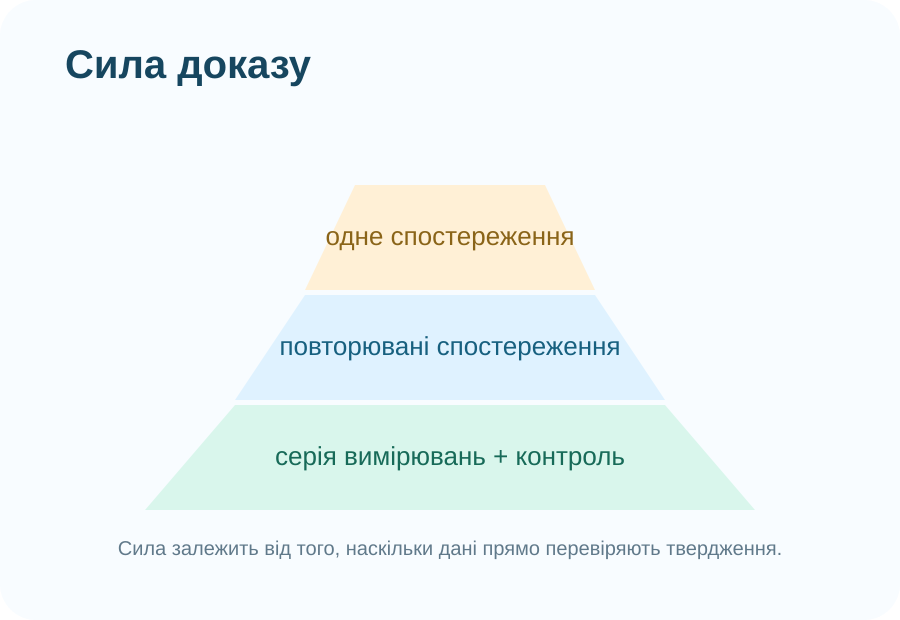

Де саме «ламається» відповідь?
Позначте, що було складно у ДТР‑4

Шукаємо не «я не знаю гідросферу», а конкретний збій: поняття → простір → процес → дані → доказ.
Не вгадуйте термін — перевірте ознаки
Карта: спочатку орієнтир, потім назва
Завдання за реальною картою
На карті простежте Дніпро. Який опис найкраще пояснює, чому забруднення вище за течією може впливати на ділянки нижче?
Реальний супутниковий кейс
Lake Powell: NASA Earth Observatory показує зміну площі водної поверхні за супутниковими знімками. Це хороший приклад того, як просторові дані дають доказ зміни, але не автоматично доводять одну-єдину причину.
NASA Earth Observatory →
Супутниковий знімок = сильний доказ просторової зміни. Причину встановлюють разом з іншими даними.
Причина → механізм → наслідок
Виправте причинний ланцюг
Ситуація: після тривалих інтенсивних опадів рівень річки швидко зріс.
Числа не говорять більше, ніж у них виміряли
| Точка | Прозорість, см | Температура, °C |
|---|---|---|
| A | 72 | 18 |
| B | 41 | 19 |
| C | 46 | 19 |
Який висновок підтримують дані?
Швидка математична перевірка
Який доказ найсильніший для твердження?
Твердження: «Площа водної поверхні водойми зменшилася за останні п’ять років».
Водний цикл як система
Canadian Space Agency / NASA: вода циркулює між резервуарами, а процеси пов’язані між собою.
Після відео
Назвіть один потік води та два резервуари, які він сполучає.
Перевірка: у відповіді має бути процес (випаровування, опади, інфільтрація, стік...) і зв’язані ним частини системи.
П’ять алгоритмів, які варто забрати з собою
1. Поняття
Не вчіть слово окремо. Шукайте 2–3 ознаки, що відрізняють його від сусідніх понять.
2. Карта
Спочатку орієнтир і просторовий зв’язок, потім назва об’єкта.
3. Процес
Причина → механізм → наслідок. Якщо немає механізму, пояснення часто неповне.
4. Дані
Описуйте те, що виміряно. Кореляція або різниця ще не доводять причину.
5. Доказ
Доказ має прямо стосуватися твердження, бути достатнім і, бажано, перевірятися незалежно.
USGS
Сучасна схема водного циклу включає природні потоки та вплив використання води людиною.
USGS Water Cycle →Чи достатньо одного спостереження?
Проблема: «Вода в річці сьогодні каламутніша, ніж учора. Отже, вище за течією завод забруднив річку». Оцініть цей висновок.
Міні-ремонт однієї власної помилки
1) Оберіть одне завдання ДТР‑4, де була помилка. 2) Запишіть тип помилки. 3) Розв’яжіть заново, використавши відповідний алгоритм із цього уроку. 4) Одним реченням поясніть, що саме Ви змінили у способі міркування.
Електронний підручник / ВШО